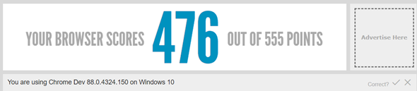

Preguntas y Respuestas
1. ¿Cuál es la diferencia entre Internet y la World Wide Web?
Internet es la interconexión mundial de computadoras que hay hoy en día, mientras que la World Wide Web es el conjunto o colección de páginas que existen en esa red llamada Internet.
2. ¿Cuáles son las partes de una URL?
Tomando como ejemplo la siguiente URL:
https://www.youtube.com/watch?v=29Sg1zpe3oI
| Parte | Extracto | Función |
|---|---|---|
| Protocolo | https: | El protocolo pide la información de la página web. Existen varios como: HTTP, HTTPS, FTP, SMPT, entre otros. |
| Dominio | //www.youtube.com/ | Es el nombre de la página web. |
| Ruta | watch | Tiene la ubicación de los archivos requeridos. |
| Parámetros | ?v=29Sg1zpe3oI | Información adicional acerca de los archivos requeridos. |
3. ¿Cuál es el propósito de los métodos HTTP: GET, HEAD, POST, PUT, PATCH, DELETE?
- GET: Obtener información de un recurso específico y no modificarlos.
- GET: Obtener información de un recurso específico y no modificarlos.
- HEAD: Obtener headers y no body de un recurso. Es muy parecido a GET.
- POST: Enviar datos al servidor.
- PUT: Obtener información de un recurso específico y no modificarlos.
- GET: Obtener información de un recurso específico y no modificarlos.
- PATCH: Modificar parcialmente un recurso.
- DELETE: Eliminar un recurso específico.
4. ¿Qué método HTTP se debe utilizar al enviar un formulario HTML, por ejemplo cuando ingresas tu usuario y contraseña en algún sitio? ¿Por qué?
POST. Pues envías tus datos al servidor y este te responderá con un recurso: la página principal de un actor registrado en la base de datos de la página web, o un mensaje de error. Lo que se envía por POST no aparece en el URL, por lo que no aparecerán tus datos al público en general.
5. ¿Qué método HTTP se utiliza cuando a través de un navegador web se accede a una página a través de un URL?
GET. Este método se utiliza para pedir la información y datos del sitio web. Una vez que el servidor acepta la petición, entonces el usuario puede ver en su pantalla el sitio web.
6. Un servidor web devuelve una respuesta HTTP con código 200. ¿Qué significa esto? ¿Ocurrió algún error?
Significa que la respuesta a una petición fue positiva (OK).
7. ¿Es responsabilidad del desarrollador corregir un sitio web si un usuario reporta que intentó acceder al sitio y se encontró con un error 404? ¿Por qué?
No. El código 404 indica que el sitio que se está buscando no existe. Aún si existiera el sitio web, es una técnica que utilizan los desarrolladores para ocultar algunos sitios a clientes sin autorización.
8. ¿Es responsabilidad del desarrollador corregir un sitio web si un usuario reporta que intentó acceder al sitio y se encontró con un error 500? ¿Por qué?
Sí. El código 500 indica que hay un error interno en el servidor, por lo que es responsabilidad del desarrollador arreglar el problema.
9. ¿Qué significa que un atributo HTML5 esté depreciado o desaprobado (deprecated)? Menciona algunos elementos de HTML 4 que en HTML5 estén desaprobados.
Significa que es mejor utilizar CSS para realizar las funciones de ese atributo para mantener la codificación por capas y no implementar estilos en HTML. Ejemplos: Name de HTML4 y img de HTML5 o rev de HTML4 y link, a de HTML5.
10. ¿Cuáles son las diferencias principales entre HTML 4 y HTML5?
- HTML5 soporta video y audio, HTML4 no.
- En HTML5 se simplificó el DOCTYPE a !DOCTYPE html.
- En HTML5 se introdujeron nuevos elementos como: header, footer, section, article.
- En HTML5 se incorporan nuevas formas de controles: colores, fecha, URL.
- Se dejan de utilizar los tags "b", "i" para letras bold e itálicas y se imlementó el tag "strong" para suplir al primero.
- Algunos tags fueron depreciados y se apuesta por el código en capas: html para estructura, CSS para estilo y JS para comportamiento.
11. ¿Qué componentes de estructura y estilo tiene una tabla?
Componentes de estructura:
| Este es un nombre de columna y se define en el head de la tabla con el tag th |
|---|
| Esta es una celda y pertenece al body de la tabla. El tag de celda es td. |
| Este es el foot de la tabla. Todo lo escrito se escribe dentro de filas, cuyos tags son tr. |
Componentes de estilo en CSS:
- Width: Se refiere a la anchura de la tabla y/o celdas
- Text-align: Alineación del texto
- Border: Dibuja los bordes entre celdas y define su estilo
- Padding: O “relleno” es el espacio en blanco entre el texto y los bordes de la tabla
12. ¿Cuáles son los principales controles de una forma HTML5?
Las formas se utilizan para la interacción con el usuario en la página web. Se implementan con el tag form y alugnos de los principales son:
13. ¿Qué tanto soporte HTML5 tiene el navegador que utilizas? Puedes utilizar la siguiente página para descubrirlo: http://html5test.com/
Navegador: Chrome Dev 88.0.4324.150
Sistema Operativo: Windows 10
Score: 476/500 puntos
14. ¿Cuál es el ciclo de vida de los sistemas de información?
- Investigacion Preeliminar
- Determinación de Requerimientos
- Diseño
- Pruebas
- Implementación y mantenimiento
15. ¿Cuál es el ciclo de desarrollo de sistemas de información?
- Planificación del concepto
- Definición de Requisitos
- Diseño
- Fase de desarrollo y Pruebas
- Puesta en marcha
- Operaciones y mantenimiento
- Disposición
Referencias
Blanco, M. (2015, July 20). Ciclo de vida de un sistema de información • gestiopolis. Gestiopolis. https://www.gestiopolis.com/ciclo-de-vida-de-un-sistema-de-informacion/
Goran Aviani. (2019, September 11). An introduction to HTTP: everything you need to know. FreeCodeCamp.org; freeCodeCamp.org. https://www.freecodecamp.org/news/http-and-everything-you-need-to-know-about-it/
HTML5 - Deprecated Tags & Attributes - Tutorialspoint. (2021). Tutorialspoint.com. https://www.tutorialspoint.com/html5/html5_deprecated_tags.htm
HTTP response status codes - HTTP | MDN. (2020, December 18). Mozilla.org. https://developer.mozilla.org/en-US/docs/Web/HTTP/Status
https://www.facebook.com/bbcnews. (2019, March 12). Leonard Kleinrock, el profesor de EE.UU. que envió el primer mensaje por internet. BBC News Mundo; BBC News Mundo. https://www.bbc.com/mundo/noticias-47538812#:~: text=Internet%20es%20una%20inmensa%20red,para%20acceder%20a%20la%20web.
Israel. (2018, June 14). El ciclo SDLC en 7 fases - Viewnext. Viewnext. https://www.viewnext.com/el-ciclo-sdlc-en-7-fases/
Universitat Oberta de Catalunya. (2017). CSS - Estilos de las tablas. Uoc.edu. https://mosaic.uoc.edu/ac/le/es/m6/ud7/index.html
¿Cuáles son las diferencias entre HTML4 (XHTML 1.0) y HTML5? – Programación en Internet. (2011, January 17). Blogs.ua.es. https://blogs.ua.es/pi/2011/01/17/%C2%BFcuales-son-las-diferencias-entre-html4-xhtml-1-0-y-html5/